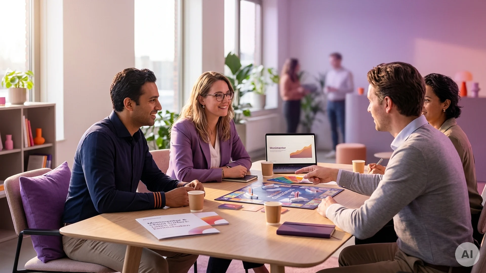

Het kompas voor elk kind in de digitale wereld.
Over Monimentor
Digitale opvoeding is belangrijk en begin je het best op jonge leeftijd
Het Verhaal van Twee Vaders
Gebouwd door vaders — voor onze eigen kinderen, en die van jou.
Wij zijn Bas en Maarten — vaders, softwaremakers en oude studievrienden uit Delft. Net als in ieder gezin zagen we het bij onze eigen kinderen gebeuren: de spanning als de tablet weg moet, de magnetische aantrekkingskracht van schermen, en de zoektocht naar balans. We wilden geen scheidsrechter zijn die alleen maar 'nee' roept of passieve toeschouwer blijven. We wilden een gids die nieuwsgierigheid en zelfregulatie aanwakkert — ruim vóór die eerste smartphone er is.
Onze Oplossing
Zachte grenzen om te leren met vallen en opstaan
Monimentor stel je in binnen 5 minuten. Vervolgens geven we kinderen op een speelse manier zachte grenzen — net zoals ze die leren in de echte wereld.
Een brug naar het gesprek
Moni begeleidt kinderen in hun schermgebruik, op een speelse manier, passend bij hun leeftijd. Het is geen vervanger van de opvoeder, maar een steuntje in de rug en een gespreksstarter binnen het gezin.
Onze kernwaarden
Vier pilaren die ons sturen.
about.waarden.cards.0.number. Psychologie vóór technologie
We begrijpen eerst het ontwikkelingsgedrag van kinderen, en bouwen daarna. Technologie is het middel, nooit het doel. Onze aanpak rust op wetenschappelijk onderzoek van de TU Delft, de inzichten van Netwerk Mediawijsheid en feedback van mediacoaches.
about.waarden.cards.1.number. Autonomie vóór restrictie
Kinderen leren sturen, niet gestuurd worden. Zelfregulatie is het doel, geen externe controle.
about.waarden.cards.2.number. Verbinding vóór isolatie
Schermgebruik is een gespreksopener, geen muur. Monimentor verbindt ouders en kinderen.
about.waarden.cards.3.number. Ontdekking vóór beoordeling
Gebruik is niet goed of slecht — het is voer voor gesprekken en om iets te leren. Elk schermmoment vertelt een verhaal.
Wetenschappelijke basis & partners
Gestoeld op onderzoek, getoetst door experts
Schermtijd reguleren vraagt om meer dan een simpele timer. Daarom bouwen we op wetenschap en praktijkervaring.
Onderzoek TU Delft
Onderzoekster Klaske deed aan de TU Delft (Industrieel Ontwerpen) diepgaand afstudeeronderzoek voor Monimentor naar gezinsdynamiek, zelfregulatie en de rol van tastbare en visuele metaforen bij schermtijd.
Netwerk Mediawijsheid
Als aangesloten partner verbinden we onze filosofie aan de landelijke richtlijnen voor mediaopvoeding en digitale balans van het Netwerk Mediawijsheid.
Pedagogen & mediacoaches
We laten onze app-interacties en zachte grenzen beoordelen door gecertificeerde mediacoaches, zodat ze naadloos aansloten bij wat kinderen emotioneel en cognitief aankunnen.
Verdienmodel & data-ethiek
Waarom gratis, en wat gebeurt er met jullie data?
Ouders vragen ons terecht: 'Als het gratis is, hoe verdienen jullie dan geld?' We zijn graag 100% transparant over onze keuzes.
Waarom 100% gratis voor gezinnen?
Ieder kind verdient een gezonde start met digitale media, ongeacht gezinssituatie of budget. Bas en Maarten bouwen Monimentor vanuit een maatschappelijke missie: de basisapp en het ouder-dashboard blijven altijd gratis.
Geen advertenties, geen verkoop van kinderdata
Wij verkopen beslist nooit data aan derden, maken geen commerciële profielen en plaatsen geen reclame. Er worden géén screenshots gemaakt van chats, zoekopdrachten of foto's. Alle data is versleuteld en blijft strikt binnen jullie eigen gezin.
Hoe blijft Monimentor duurzaam?
We bouwen aan een gezonde toekomst via samenwerkingen met gemeenten en scholen, de verkoop van ons fysieke gezinsspel Cloud Surfers, en eventuele optionele geavanceerde gezinsfeatures in de toekomst — zonder dat de gratis kern ooit achter een betaalmuur verdwijnt.
Twee sporen
Sluit je aan bij onze missie
Of je nu vanavond al rust wilt aan je eigen keukentafel, of als professional wilt samenwerken aan een gezonde digitale generatie.

1. Professionals, scholen & investeerders
Werk je als mediacoach, in het primair onderwijs, bij een JGZ-instelling of gemeente? Of wil je als impactinvesteerder of fonds bijdragen aan de opschaling van Monimentor en het Cloud Surfers bordspel? Laten we kennismaken.